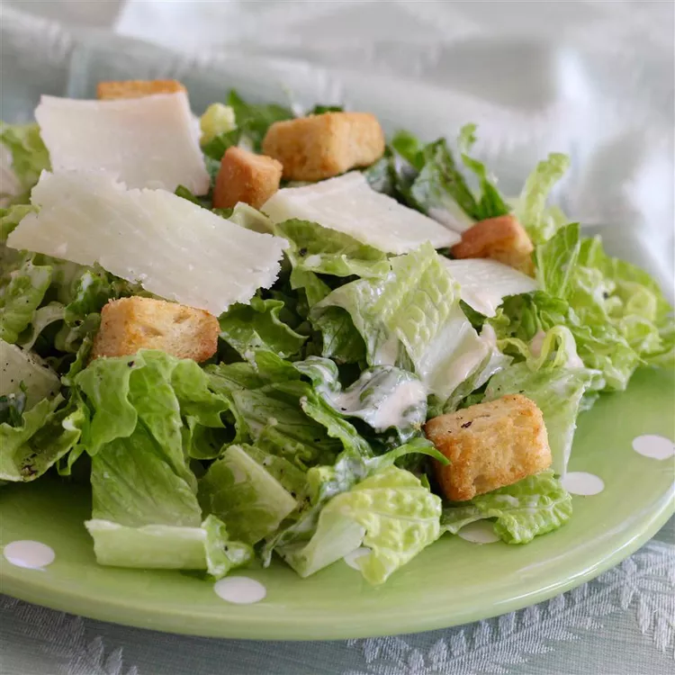

This is an unbelievable, restaurant-quality, creamy Caesar salad dressing that will make you swear off of anything store-bought again. Great for your classic Caesar salad, or as a dip for all kinds of veggies. Will NOT disappoint! To serve, toss with chopped romaine in a salad bowl and shave Parmesan cheese on top of salad; season with salt, black pepper, and a squeeze of fresh lemon juice.
Combine anchovy fillets with garlic in a food processor and pulse several times to form a paste. Process mayonnaise, Parmesan cheese, half-and-half, lemon juice, Dijon mustard, and Worcestershire sauce with anchovy mixture until dressing is creamy. Refrigerate for 1 hour or more before serving.
